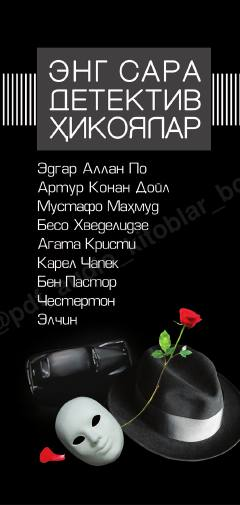

ESJahon adabiyotining eng sara va qiziqarli detektiv hikoyalari to'plami.
Ushbu to'plam jahon adabiyotining eng sara detektiv hikoyalarini o'z ichiga oladi. Kitobda inson ruhiyati va jinoyat sodir etilishiga olib keluvchi murakkab psixologik holatlar mohirona tasvirlangan.